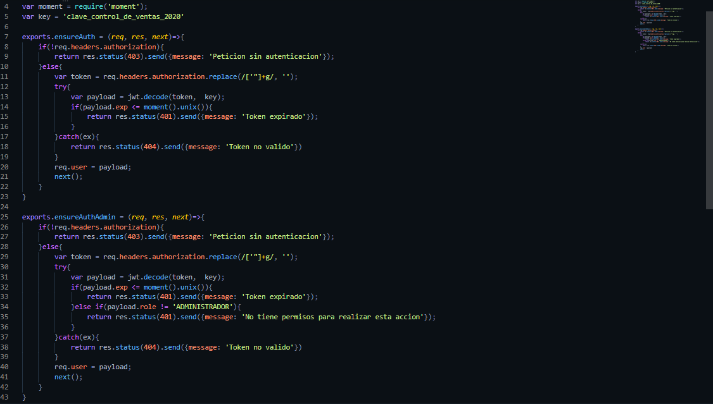

Sistema de Ventas en Node.js
Fecha de Realizacion: 23/02/2020
Este proyecto busca ser un sistema para ventas de manera online, como todos los proyectos de codigo back-end esta programado con el lenguaje JavaScript, con el entorno de trabajo Node.js, se utilizo como gestor de Base de datos MongoDB y con el framewor que trabaja como servidor de aplicaciones Express, para ver el funcionamiento de la API se utiliz Postman para las solicitudes HTTP y ver los datos guardados se utilizo Robo3T:
- Body-Parser
- jwt-simple
- moment
- bcrypt-nodejs
El desarrollo de esta API fue mediante el patron de diseño Modelo-Vista-Controlador teniendo 5 modelos que son: Usuario, Carrito de Compras, Productos, Categorias, y Facttura. Al estar orientado a un sistema para ventas debe de contar con funciones que puedan suplir las necesidades de usuarios clientes y usuarios pertenecientes a la empresa, es por ello que la API para ambos tipos de usuario permite realizar un registro de usuario con datos que son necesarios para el buen funcionamiento al igual que cuenta con un Inicio de Sesion para autenticar la validez del usuario la cantidad de permisos que este posee, estos permisos son controlados mediante un "Rol" que diferencia entre usuario cliente y un usuario administrador, como otros proyectos este permite alterar los datos de un usuario propio, este proyecto es util para la gestion de inventario ya que este se clasifica por seccion, haciendo mas facil la busqueda de productos y la manipulacion de estos, cabe resaltar que estas ultimas acciones pueden ser realizadas unicamente por usuarios que tengan un rol "ADMIN", los usuarios clientes podran buscar los productos por diferente filtros los cuales son: productos mas vendidos, productos menos vendidos, productos por categoria, productos ordenados de manera ascendente y descendente por precio, y por coincidencia de caracteres; una vez los usuarios hayan encontrado el o los productos podran agregar este a un carrito de compras en donde se estara dando un total del precio, si el usuario confirma la compra de los productos se procedera a generar una factura con los datos anteriormente obtenidos, como ya es logico el usuario cliente tendra el control de su propia y unica cuenta, y los usuarios pertenecientes a la empresa podran controlar todas las funciones
Las habilidades obtenidas por este proyecto fueron muy significativas ya que puse en practica lo aprendido durante los ultimos meses y de esta manera mejorar en la escritura de codigp
Para acceder al proyecto ingrese al siguiente link de github Click Aqui
- 